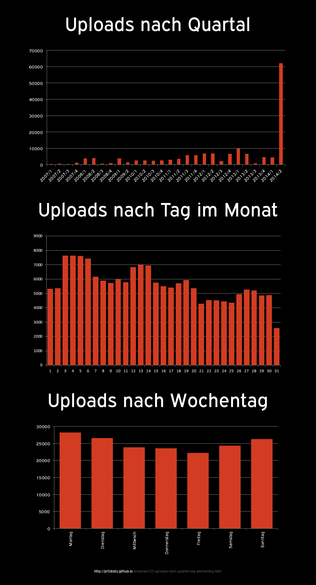

Uploads nach Quartal, Tag im Monat, Wochentag

Annahmen
- Erhebungszeitraum 23.01.2007 bis 15.07.2014
Methodik
- siehe Hinweise zur Methodik
SELECT YEAR(FROM_UNIXTIME(created)) AS year, QUARTER(FROM_UNIXTIME(created)) AS quarter, COUNT(*) AS amount FROM `stats` GROUP BY year, quarter ORDER BY year ASC, quarter ASCSELECT WEEKDAY(FROM_UNIXTIME(`created`)) AS `weekday`, COUNT(*) AS `amount` FROM `stats` GROUP BY `weekday`SELECT DAY(FROM_UNIXTIME(`created`)) AS `day`, COUNT(*) AS `amount` FROM `stats` GROUP BY `day` ORDER BY `day` ASC